“어릴때는 발명가나 화가가 되고 싶었다. 첫 카메라를
갖고나서 그 둘을 합친 무언가가 될 수도 있다는 것을
깨달았다. 반은 화가 반은 발명가. 그것이 카메라를 사
용하는 한 가지 방식이 될 수 있다고 생각했다.” 미셸
공드리의 영상 작업을 가장 잘 설명하는 말이 이것이다.
그의 작품은 기발한 아날로그 특수효과와 회화적인
이미지들로 가득 차있다, 때로 스토리가 그에 못 미치
거나 전혀 엉뚱한 영역에서 재능을 낭비한 경우도 있
었다. 그럼에도 공드리의 영화가 기대되는 이유는 그
가 그려내는 환상적인 이미지들 때문이다.
Filmography
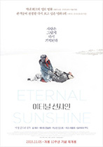
이터널 선샤인
2004
감독, 원안
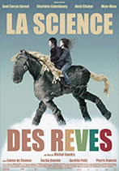
수면의 과학
2006
감독, 각본, 제작
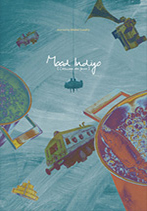
무드 인디고
2013
감독, 조연, 각본
마이크롭 앤 가솔린
2015
감독, 각본
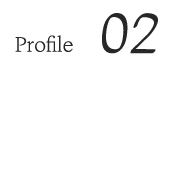
미셸 공드리 (Michel Gondry)
영화감독, 시나리오 작가
출생
1963.5.8
수상
2005년 제 77회 미국 아카데미 시상식 각본상
2005년 제 57회 미국 작가 조합상 각본상
경력
2011.02 제 64회 칸국제영화제, 단편 부문, 시네파운데이션부문 심사위원장
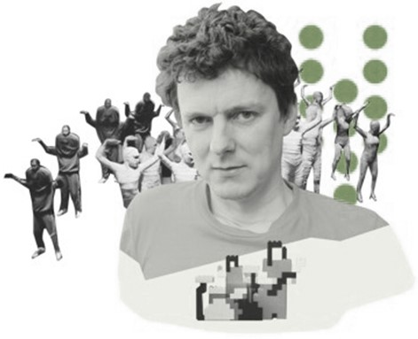
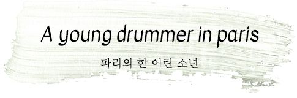
미셸 공드리는 1963년 프랑스 베르사유 지역에서
태어났다. 그의 할아버지는 초창기 전자건반을 발
명한 사람이었고, 아버지는 악기상이었으며, 어머
니는 피아니스트였다. 창의력을 중시하는 집안 분
위기는 그를 자연스럽게 아티스트의 길로 이끌었
다. 하지만 그 정도 레벨의 여느 감독들과 달리 미
셸 공드리가 처음부터 영화에 미쳐있었던 것은 아
니다. 파리의 예술대학으로 진학한 그는 마음 맞는
친구들을 모아 ‘Oui Oui(위위)’ 라는 팝 록밴드를
결성했다. 1992년까지 지속된 이 밴드에서 공드라
는 드럼을 맡고 있었다. 그리고 직접 뮤직비디오를
연출했다. 아이러니하게도 위위의 음악보다는 그
들의 뮤직비디오가 더 반항을 일으켰다. 특히 한
비디오는 판타지 영화에서 봄 직한 만화경 같은 이
미지들로 미래적인 분위기를 연출했다.
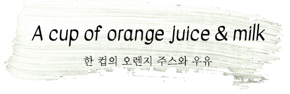
그는 한 인터뷰에서 자신의 실험정신에 관한
이런 고백을 했다. “내가 여러가지를 한 데 섞
어 놓고 결과를 보는 식의 실험을 좋아하는 건
사실이다. 어릴 때 내가 좋아하는 음료는 오렌
지 주스와 우유였는데 하루는 두 배로 좋아할
만한 음료를 만들고 싶었다. 그래서 오렌지 주
스와 우유를 섞어봤다. 역겨운 맛이었다! 하지
만 적어도 시도는 해봤다.”
2001년 스파이크 존즈 감독의 추천으로 [휴
먼 네이처]를 연출하며 영화계에 발을 들인
뒤에도, 그의 실험적인 시도는 계속되었다.
매 프레임을 설치미술 작품처럼 꾸미려는 그
의 고집스러운 성향과 영화라는 매체는 때로
는 오렌지 주스와 우유처럼 겉돌았다. 하지만
가끔은 오렌지 푸딩만큼 썩 괜찮은 작품이
만들어지기도 했다.
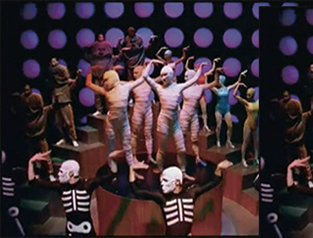
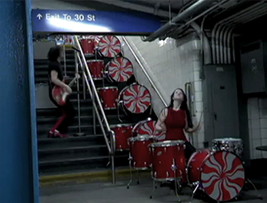
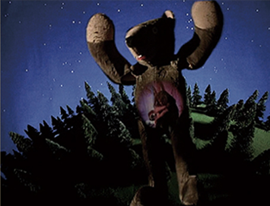
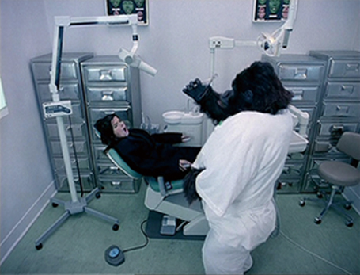
Δ 몸에 밴, 동시에 노력으로 빚은 리듬감
그의 음악적 자양분은 이후 연출한 뮤직비디오에서도 잘 드러난다.
대표작으로는 올해 안산 M 페스티벌 무대에 오른 바 있는 세계적인
일렉트로닉 뮤지션 ‘케미컬 브라더스(The Chemical Brothers)’의
‘Star Guitar’ 뮤직비디오를 들 수 있다. 본 뮤직비디오에선 기차 창
밖의 풍경을 하염없이 보여주는 데, 재미있는 건 지나치는 전신주와
건물이 곡의 박자와 기가 막히게 맞아 떨어진다는 점이다. 드러머
출신으로서 자연스럽게 리듬감에 몸에 배어 있는 그는 메이킹 필름
을 통해 곡의 박자를 펜으로 그리며 아이디어 스케치하는 모습을
공개하기도 했다. 그가 출연하는 다큐멘터리를 보면 뮤직비디오 제
작 시 박자를 하나하나 모눈종이에 기록하는 등 세심하게 프레임을
연출하는 장면을 볼 수 있다.
Δ 뮤직비디오 감독으로의 본격 데뷔
시작은 비요크(Bjork)였다. 그가 메이저 신의 궤도에 올라탄 시점은
뛰어난 일렉트로닉 뮤지션이자 신비한 매력을 가진 비요크는 위위의
뮤직비디오를 보고 미셸 공드리에게 자신의 솔로 데뷔곡인 ‘Human
Behaviour’의 뮤직비디오 연출을 맡긴다. 숲 속에서 곰 인형에게
쫓기는 악몽을 동화적으로 연출한 뮤직비디오는 비요크의 성공적인
솔로 활동의 출발점이자 뮤직비디오 감독으로서 미셸 공드리의 이름
을 세상에 알리는 시작이었다. 이후에도 미셸은 ‘Army of me’와 같
은 그녀의 대표곡의 뮤직비디오를 연출하며 끊임없이 서로 영감을
주고받는다. 벨벳 언더그라운드에 예술적 조력자 앤디 워홀이 있었듯,
비요크에겐 미셸 공드리가 있었다고 봐도 무방할 만큼.
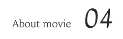
이터널 선샤인은 미셸 공드리 자신이 부담을 느낄 정도로
큰 성공을 거두었다. 아카데미 각본상은 성공의 일부에
지나지 않았다. 이터널 선샤인은 사랑이라는 추상적인 개
념을 완벽하게 구상화시킨 영화였다. 그것은 내용뿐 아니
라 영상, 연기 편집, 음악 모두가 완벽한 조화를 이룬 결과
였다. “나의 첫 비디오는 비요크를 위한 것이었는데, 그
후로 내가 뭘 만들던지 사람들은 ‘그래, 그런데 첫번째 것
만큼 좋진 않아’라고 했다. 디프트 펑크의 비디오를 만들고
나서야 그 말이 사라졌다. 나는 사람들이 이터널 선샤인을
잊어버릴만한 영화를 만들고싶다. 이터널 선샤인은 최근
수년간이나 내 엉덩이에 들러붙어있었다.”
자신의 연애담을 바탕으로 한 <수면의 과학>에서, 공드리는 종종
마분지로 만든 모형들을 스톱모션으로 촬영해 배경에 합성하는
방식으로 아늑한 분위기를 연출했다. 솜을 뜯어서 만든 구름, 인형
탈을 쓴 사람들도 주인공의 꿈이라는 핑계 아래 천연덕스럽게 등
장한다. 미셸공드리는 종종 꿈을 창의력의 원천으로 꼽는다. “나는
어린아이처럼 굉장히 많은 꿈을 꾸며, 그것을 창작에 활용한다. 그
것들은 때로 내 마음속에 하나의 장소처럼 자리를 잡고 있어서, 나
는 정확히 같은 장소로 돌아갈 수도 있다. 그러므로 내가 창작을 위
해 꿈을 파해치는 것은 다른 사람들이 창작을 위해 자신의 추억을
파헤치는 것과 마찬가지로 자연스러운 일이다.” 그의 영화가 종종
두서없는 이미지 나열, 물리법칙을 무시한 몽환적인 미장센으로
가득 채워지는 것도 그러므로 어찌보면 자연스러운 일이리라.
무드인디고는 공드리 특유의 미장센이 정점에 달한 작품
이다. 완성도와 밀도, 스케일 모두에서 전작들을 넘어섰
다. 이 영화에서 주인공들의 주변 환경은 그들의 심리 상
태를 고스란히 반영한다. 방의 모양조차 기분을 따라 둥
글게, 혹은 각지게 변형되곤 한다. 초현실적이지만 따뜻한
분위기, 어린아이 같은 천진한 상상력, 사랑의 도취감을
표현하는 장면들로 인해 그의 영화는 종종 샤갈의 그림에
비유된다. 무드인디고의 전반부 역시 면사포를 쓴 신부와
바이올린을 켜는 당나귀가 등장하는 샤갈의 그림들과 일
맥상통하는 정서를 담고있다. 스톱모션으로 경쾌하게 촬
영된 주인공의 아침 식사, 공드리의 뮤직비디오들을 연상
시키는 파티신, 구름 모양 기구를 타고 파리를 날아다니는
주인공들의 첫 데이트 장면등은 마카롱을 곁들인 오렌지
주스처럼 달달하고 상큼하다.